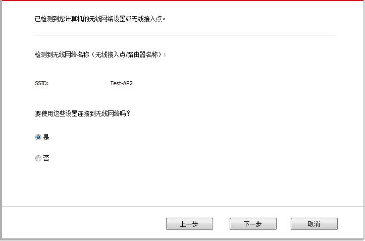

5.无线网络设置（适用于Wi-Fi机型）
根据型号，拥有 Wi-Fi 打印功能的打印机型号，支持基础结构连接模式和 Soft-AP，两种无线网络连接类型，通常计算机和打印机之间每次只能有一个连接。若您在无线网络设置过程中遇到问题，请参阅第5.3章无线网络设置常遇问题。
 |
基础结构模式：通过路由器与无线设备连接 1.接入点（无线路由器） 2.无线网络打印机 3.通过无线网络连接至接入点的计算机 4.通过网线连接至接入点的计算机 |
|
|
Soft-AP 无线计算机与无线设备直接连接。 |

5.1.基础结构模式
您可以通过接入点（无线路由器）作为媒介，将计算机和打印机连接在一起。接入点（无线路由器）连接分为无线网络配置工具和 Wi-Fi Protected Setup（WPS）配置两种方式。
重要：在进行无线网络安装前，必须了解您的接入点（无线路由器）的网络名（SSID）和密码，在无线网络配置时需要使用。如果无法确定，请咨询您的网络管理员或接入点（无线路由器）制造商。
5.1.1.无线网络配置工具
若您的计算机已安装驱动并连接过无线网络，但无线网络发生变更，可以通过无线网络配置工具重新配置。
5.1.1.1.前期准备事项
1.接入点（无线路由器）。
2.已连接到网络的计算机。
3.具有无线网络功能的打印机。
5.1.1.2.无线网络配置工具配置方法
1.在计算机中调出无线网络配置工具。
1）Windows系统：点击计算机“开始”菜单－“所有程序”－"Pantum"－“产品名称”－“无线网络配置工具”。
2）Mac系统：点击计算机Finder菜单栏“前往”－“应用程序”－“Pantum”-“Utilities”－“Wireless Network Configuration Tool”。
2. 使用USB连接线连接配置。
在以下界面，选择“是的，我有一根USB电缆可用于安装”。点击“下一步”。
2.1 计算机已连接至无线网络。
1）无线网络配置工具默认选择当前计算机已连接的无线网络，按照界面提示完成配置。

 |
注： |
• 您所选择的网络名（SSID）应与计算机连接的接入点（无线路由器）的网络名（SSID）一致。 |
2）需要连接其他无线网络请勾选“否”配置其他无线网络，按照界面提示完成配置。
|
注： |
• 目前，打印机支持的安全模式有三种：无、WEP和WPA/WPA2。 1) 无：未使用任何加密方式。 2) WEP：通过使用WEP（有线等效加密），以安全密钥发送和接收数据。WEP密钥适用于64和128位加密网络，可同时包含数字和字母。 3) WPA/WPA2：是 Wi-Fi 保护接入预共享密钥，它通过使用TKIP或AES加密（WPS－Personal）将无线设备与接入点进行连接。WPA/WPA2使用长度介于8-63个字符之间的预共享密钥（PSK）。 • “显示密码”默认为不勾选，若勾选，所输入的密码将明文显示。 |
2.2 计算机未连接至无线网络。
在以下界面，输入接入点（无线路由器）的网络名SSID（SSID区分大小写）及密码，按照界面提示完成配置。
|
注： |
• 如果您不清楚接入点（无线路由器）的网络名（SSID），点击“打印无线网络信息页”可查看你需要的接入点（无线路由器）的网络名（SSID）。 • 无线网络配置完成后，若打印机不能正常使用，请重新安装驱动。 |
3. 使用WPS连接。
在以下界面，选择 “不，我没有USB电缆”。点击“下一步”。
1）使用WPS方式，执行以下步骤，从打印机上启动无线网络。（WPS具体配置，请参阅第5.1.2章）

2）可根据打印机上的Wi-Fi指示灯状态，判断打印机是否连接成功。若配置失败，请点击“上一步”，重新配置；若配置成功，请点击“完成”按钮，完成配置。
|
注： |
• 无线网络配置完成后，若打印机不能正常使用，请重新安装驱动。 |
5.1.2.Wi-Fi Protected Setup（WPS）配置
如果接入点（无线路由器）支持 Wi-Fi Protected Setup（WPS），则可以分别按下打印机控制面板上的Wi-Fi按键和接入点（无线路由器）上的WPS按键，从而将打印机连接到无线网络。
5.1.2.1.前期准备事项
1.接入点（无线路由器）支持Wi-Fi Protected Setup（WPS）。
2.具有无线网络功能的打印机。
5.1.2.2.Wi-Fi Protected Setup（WPS）配置方法
1.打开打印机和接入点（无线路由器）的电源。
2.确保打印机处于就绪状态。
|
注： |
• 若打印机进入休眠状态，按下打印机控制面板的任意按键，打印机即被唤醒。 |
3. 按下打印机控制面板上的“Wi-Fi键”超过2秒，直到打印机的Wi-Fi灯蓝灯闪烁，然后松开。
4.在2分钟内，按下接入点（无线路由器）上的“WPS按键”，然后松开。
5.接入点（无线路由器）与打印机开始进行无线网络连接，打印机的Wi-Fi灯蓝灯闪烁。连接成功后打印机的Wi-Fi灯蓝灯常亮。
若超过2分钟没有建立好连接，打印机返回就绪状态，Wi-Fi灯灭 ，Wi-Fi Protected Setup（WPS）连接失败。若需要重新连接，请重复以上第3-4步骤。
|
注： |
• Wi-Fi Protected Setup（WPS）连接成功后，若您希望通过无线网络方式进行打印，请安装驱动。 |
5.1.3.如何关闭已连接的Wi-Fi网络
按照上述步骤完成基础结构模式的无线网络连接，已连接状态控制面板上的Wi-Fi灯将常亮 ，此时按住此按钮2秒钟以上可断开Wi-Fi连接（Wi-Fi灯将变为熄灭 ）。
5.2.Wi-Fi热点模式
您可以不使用接入点（无线路由），将无线网络功能的计算机与无线网络打印机建立连接。
5.2.1.前期准备事项
1.具有Wi-Fi热点功能的打印机。
2.具有无线网络功能的计算机。
5.2.2.Wi-Fi热点连接
连接打印机热点前需先开启打印机的Wi-Fi热点功能。开启方式为登录内嵌Web服务器，点击“设置”-“无线设置”-“无线热点”，将热点基本状态设置为“开启”。
5.2.3.Wi-Fi热点配置方法
当打印机无线热点处于激活状态时，用户可以通过搜索打印机无线热点的方式与之直接建立连接。无线热点默认为开启状态且默认密码为“12345678”，打印机具体SSID 和密码可通过打印“Wi-Fi 配置信息页”获取，连接后参照Web 配置方式即可完成配置。
5.3.无线网络设置常遇问题
1.未找到打印机
• 计算机、接入点（无线路由器）或打印机电源是否已打开。
• 计算机和打印机之间是否已连接了USB连接线。
• 打印机是否支持无线网络连接。
2.网络连接时，找不到网络名（SSID）
• 检查接入点（无线路由器）的电源开关是否已打开。
• 打印机找不到您需要连接的接入点（无线路由器）的网络名 (SSID)，请检查接入点的网络名（SSID）并尝试重新连接。
• 每当接入点（无线路由器）的配置发生变化时，您必须重新设置打印机的无线网络。
3.连接失败
• 请检查接入点（无线路由器）和打印机的安全模式、密码是否正确。
• 检查打印机周围的无线接收。如果路由器远离打印机或中间有障碍，可能影响信号的接收。
• 关闭接入点（无线路由器）和打印机的电源，重新启动后再进行配置。
4.如果在网络中使用打印机时出现问题，请检查以下几方面：
• 检查防火墙软件是否封锁通信。如果计算机和打印机连接在同一网络中却搜索不到，可能是因为防火墙软件封锁了通信。请参阅防火墙软件的用户指南，将防火墙关闭，然后重新尝试搜索打印机。
• 检查打印机IP地址的分配是否正确。您可以打印打印机的网络配置信息页来检查IP地址。
• 检查打印机和计算机是否在同一网络。如何判断是否在同一网络，请参阅如下步骤：
1）如下所示，选择“命令提示符”。
a. Windows 8/10系统：从开始屏幕选择“搜索”按钮，在搜索框中输入“命令提示符”，按键盘“Enter”键。
b. Windows 7/Vista/XP系统：单击“开始”菜单-“所有程序”-“附件”-“命令提示符”。
2）在弹窗中先后键入ping及您的打印机IP地址 ，按键盘“Enter” 键。
如：ping XXX.XXX.XXX.XXX（“XXX.XXX.XXX.XXX”为打印机IP地址）
3）如果窗口显示往返时间，则说明您的打印机和计算机在同一网络。如果窗口未显示往返时间，请参阅第5章重新给打印机配置无线网络。
|
注： |
• 有关接入点（无线路由器）的信息，请参阅其用户指南或咨询其制造商。 |